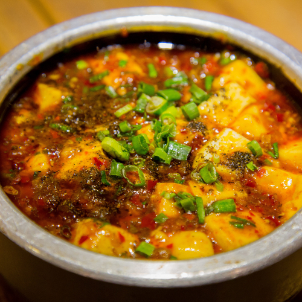

Mápó dòufu

Description
According to Wikipedia (link here) "Mapo tofu (Chinese: 麻婆豆腐;
pinyin: mápó dòufu) is a popular Chinese dish from Sichuan province.
It consists of tofu set in a spicy sauce, typically a thin, oily, and
bright red suspension, based on douban (fermented broad bean and chili
paste), and douchi (fermented black beans),along with minced meat, traditionally beef."
It is usually served on or with rice.
Here is a simple recipe from Cookeruu
Ingredients
- 1 (450g) package soft tofu cut into 1 cm cubes
- 2 tbsp vegetable oil
- 3 cloves garlic minced
- 2 green onion divided
- 2 dried chili crushed
- 80 g minced chicken pork, beef, or finely chopped mushrooms
- 1 1/2 tbsp Doubanjiang (spicy bean paste)
- 1 cup chicken stock or water
- 1 tbsp oyster sauce or soy sauce
- 1/2 tsp each dark soy sauce, sugar, and ground sichuan pepper
- 1 tbsp cornstarch mixed with 2 tbsp water, for the slurry
- 1 tsp sesame oil
Method
- Heat oil in a wok over medium heat.
- Add garlic, white parts of green onion, and dried chili and cook for 30 seconds or until fragrant.
- Add minced meat and cook for about 2 minutes while breaking up the meat with a spatula.
- Add doubanjiang and fry for another minute, stirring well to combine.
- Add chicken stock and season with oyster sauce, dark soy sauce, sugar, and ground sichuan pepper. Stir to combine and cook for 2 minutes.
- Add cornstarch slurry and stir continuously until thickened.
- Carefully stir in your tofu. Cook for about 2 minutes until the tofu is heated through.
- Season with salt to taste if needed, and finish with sesame oil.
- Transfer to a bowl, sprinkle with reserved green onions, and serve immediately over a bowl of steamed rice. Enjoy!
Return to main page